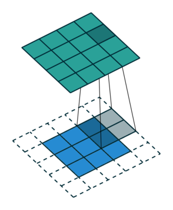

Software Developer Blog: Running away
After spending a long time updating GeNN's code generator to generate more efficient CUDA kernels which have the side benefit of compiling much more quickly, there remained something of a dirty secret.
The runner.cc file which contains the helper functions generated by GeNN for allocating memory and copying variables between GPU and CPU could still easily grow to the point that compilation would take an extremely long time and consume all available memory.
For our multi-area model implementation, I added various options which turn off the generation of empty functions and, as everything in this model was generated on the GPU anyway, I also turned off the generation of host copies of almost all variables.
This resulted in a paltry 40 mbyte runner.cc which compiled in a couple of minutes which, for a model this size, is just about acceptable.
However, as users have started making bigger models and not always wanting to generate everything on the GPU, this issue has kept reappearing.
Jinjaly investigating
To investigate this in a slightly simpler way than just building larger and larger GeNN models until things break, I used Jinja to build a template that could generate fake runner.cc files containing varying number of arrays, representing the state variables in a real model.
The heart of this template looked something like this:
// Push and pull functions {% for array in arrays %} void push{{array.name}}ToDevice() { CHECK_CUDA_ERRORS(cudaMemcpy(d_{{array.name}}, {{array.name}}, {{array.size}} * sizeof(float), cudaMemcpyHostToDevice)); } void pull{{array.name}}FromDevice() { CHECK_CUDA_ERRORS(cudaMemcpy({{array.name}}, d_{{array.name}}, {{array.size}} * sizeof(float), cudaMemcpyDeviceToHost)); } {% endfor %} void allocateMem() { CHECK_CUDA_ERRORS(cudaSetDevice(0)); {% for array in arrays %} CHECK_CUDA_ERRORS(cudaHostAlloc(&{{array.name}}, {{array.size}} * sizeof(float), cudaHostAllocPortable)); CHECK_CUDA_ERRORS(cudaMalloc(&d_{{array.name}}, {{array.size}} * sizeof(float))); {% endfor %} }
this template (saved in runner.cc.template) could then be used to generate C++ and print it to stdout like:
from jinja2 import Template with open("runner.cc.template", "r") as file: template = Template(file.read()) arrays = [{"name": f"array_{i}", "size": 1000} for i in range(num_arrays)] print(template.render(arrays=arrays))
On Linux, the C++ could then be built using the same command line used by GeNN itself (some options omitted for brevity) and timed using the /usr/bin/time (I recently discovered that command time can be used as an alternative way of disambiguating this from the bash builtin time):
/usr/bin/time -v nvcc -c -x cu -arch sm_86 -std=c++11 test.cc
Initial experiments showed that while both the wall clock time and maximum resident set size (roughly analagous to peak physical memory usage) grow approximately linearly (much to my relief after reading way too many horror stories on Bruce Dawson's excellent blog) with the number of arrays, it still grew extremely rapidly:
Therefore, a model with 10000 arrays will take over 4 minutes and around 8 gbyte of memory to compile — neither of which are really acceptable. To put this in perspective, if you split a model up into about 100 populations and connect most of the permutations together (this is an all-too-reasonable assumption in many areas of the mammalian brain), you could easily reach this many variables.
So....what is NVCC doing with all this time and memory?
runner.cc only contains host code (NVCC is just used to ensure the same compiler/options across execution units and to deal with setting up the CUDA linker/include paths) but, when you pass a 5 mbyte runner.cc file to NVCC, the file that is passed on to the host compiler (GCC) has grown to 15 mbyte!
However, this turned out to be simply because NVCC is in charge of running the preprocessor so that 10 mbyte is 'just' the result of expanding macros and including C++ standard library header files!
Profiling
Around this point, I remembered reading a blog post about profiling compiler times on yet another excellent blog and turned on the -ftime-report GCC option.
As the blog promised, this generates a gargantuan report which starts by splitting the compilation time of this 10000 array model into 'phases':
phase setup : ... 0.00 ( 0%) wall 1384 kB ( 0%) phase parsing : ... 20.81 ( 9%) wall 1794944 kB (25%) phase lang. deferred : ... 0.02 ( 0%) wall 2426 kB ( 0%) phase opt and generate : ... 214.14 (91%) wall 5412439 kB (75%) phase finalize : ... 0.54 ( 0%) wall 0 kB ( 0%)
Somewhat surprisingly (as, after all, we're throwing a massive source file at GCC), the vast majority of time is spent in "opt and generate" (code-generation and optimisation) rather than in parsing. Looking a little further down, where the report contains a seeminly unsorted list of processes within phases, the only other 'hot' line is:
expand vars : ... 101.93 (43%) wall 50597 kB ( 1%)
but, as a non-GCC developer, this doesn't help me a great deal....back to pursuing random hunches!
Smoking gun
As there's no virtual functions in this code, my C++ prejudices suggest that only exceptions could possibly be to blame and, as each of those CHECK_CUDA_ERRORS macros hides a throw std::runtime_error, maybe that's not unreasonable.
Generating all that zero-cost abstraction must involve expanding a lot of variables....right!?
How about if we replace our current implemementation of CHECK_CUDA_ERRORS:
#define CHECK_CUDA_ERRORS(call) {\ cudaError_t error = call;\ if(error != cudaSuccess) {\ throw std::runtime_error(__FILE__": " \ + std::to_string(__LINE__) \ + ": cuda error " \ + std::to_string(error) \ + ": " + cudaGetErrorString(error));\ }\ }
with:
#define CHECK_CUDA_ERRORS(call) {\ cudaError_t error = call;\ assert(error == cudaSuccess); \ }
or even:
#define CHECK_CUDA_ERRORS(call) {\ cudaError_t error = call;\ if(error != cudaSuccess) {\ std::abort();\ }\ }
Some template-meddling and sweeping later we can produce:
Seems like this actually works! Our 10000 array model now only takes 30 seconds and less than 1 gbyte of memory to compile which is much more reasonable!
However, are the exceptions really to blame?
Compile times seem much better when using the single-threaded CPU backend and that allocates memory with new[] (obviously, modern C++ rules don't apply in generated code...) which throws std::bad_alloc to signal failure.
Admittedly, because there's no need to copy data when everthing's on the CPU, this backend generates empty 'push' and 'pull' functions so there's less code to compile overall but, if generating exception handling code was the problem, you would expect issues here too.
Maybe expanding all that message-generating code is the real issue...
How about we hack the following additional variants into the template:
#define CHECK_CUDA_ERRORS(call) {\ cudaError_t error = call;\ if(error != cudaSuccess) {\ throw std::runtime_error();\ }\ }
and
#define CHECK_CUDA_ERRORS(call) {\ cudaError_t error = call;\ if(error != cudaSuccess) {\ std::cerr << __FILE__ << ": " << __LINE__;\ std::cerr << ": cuda error " << error << ": ";\ std::cerr << cudaGetErrorString(error) << std::endl;\ std::abort();\ }\ }
and sweep:

std::abort is definitely easier on the compiler than throwing exceptions but, compiling the message generation code also seems to make a large difference.
MSVC
The other compiler I often use with GeNN is Microsoft Visual C++.
I can't quite face repeating this whole process again but, initial tests suggest that this optimisation is even more valuable here.
Using the simplest std::abort raising CHECK_CUDA_ERRORS macro, the 10000 array model can be compiled in around 19 seconds whereas, using the original exception-throwing macro...I have given up waiting after around 1 hour!
Implementing a workaround
GeNN is approaching the end of the 4.X release cycle so, for now, I have added a simple but slightly hacky workaround for these issues by adding a generateSimpleErrorHandling flag to GeNN's CUDA backend to switch from generating code with the previous full-fat CHECK_CUDA_ERRORS macro to the simplest version which simply calls std::abort without generating a message. This can be turned on from C++ like:
void modelDefinition(NNmodel &model) { ... GENN_PREFERENCES.generateSimpleErrorHandling = true; ... }
or from Python like:
model = GeNNModel("float", "my_model", generateSimpleErrorHandling=True)
Real models
The largest model we currently have to play with with is the multi-area cortical model.
Although it has 64516 synapse groups, due to its use of procedural connectivity (where all synaptic connectivity, weights and delays are generated on the fly), it doesn't actually have any per-synapse group variables with push and pull functions.
Nonetheless, using the new simple error handling reduces the compilation time of the runner.cc from 155 to 129 seconds.
Finally, although it is not possible to run the model in this way as no single GPU has enough memory, we can generate a runner.cc from this model with standard, in-memory sparse connectivity and push and pull functions for each variable.
This results in a nightmarish, 114 mbyte runner.cc which, using the original CHECK_CUDA_ERRORS macro, would definitely be impossible to compile on any reasonable machine.
However, using the new simplified macro, the runner can be compiled in just over 20 minutes and requires just over 14 gbyte of memory — still pretty unusable but definitely progress!
Long-term solutions
The majority of the time, the errors which the CHECK_CUDA_ERRORS macro is aiming to catch are out of memory errors in the allocateMem function and errors that occured during (asynchronous) kernel launches that are only caught at the next push or pull call (which are typically the main synchronisation points) so perhaps, in future, we could adopt a more targetted error-handling approach which provides a balance between sufficient debugging information and compilation time.
However, while the error handling changes discussed here allow the current approach to generating runner.cc files to scale a bit further, the code we are generating is still pretty pathological, least of all because the Windows PE executable format has a limit of 65535 symbol limit which you can hit quite easily with a large model.
Early this year, I made an attempt at re-writing the code generator to apply the same merging strategy GeNN uses elsewhere to runner.cc.
This means that all the variables associated with neuron and synapse populations with the same types of state variable can be allocated using one piece of shared generated code.
While this works, it adds yet more complexity to GeNN and fundamentally breaks the 'classic' way of using GeNN from C++, where you link some C++ simulation code against your generated code and can access state variables directly by name.
However, based on this investigation, maybe that project needs resurrecting!
All the code I've developed to explore this problem is available from my Github.
Software Developer Blog: How to do convolutions with doubly blocked Toeplitz matrices
How to do convolutions with doubly blocked Toeplitz matrices
A few weeks ago, Jamie (@neworderofjamie) asked me on the chat whether I knew what doubly blocked Toeplitz matrices are and how they implement convolutions. I had no clue. Since then we have implemented convolutions using doubly blocked Toeplitz matrices in GeNN and found them to be extremely useful and efficient. 1 In this software blog I will give a brief overview on the why and how convolutions relate to doubly blocked Toeplitz matrices. My blog is based on Ali Salehi's tutorial Convolution as Matrix Multiplication but updated to use machine-learning rather than signal-processing conventions and I am trying to avoid using too many unusual ways of re-arranging rows and columns.
The why
Let us consider the convolution of a \(2\times 2\) kernel with a \(3\times 3\) layer. We denote the kernel as \[ K= \left(\matrix{ k_{11} & k_{12} \cr k_{21} & k_{22}}\right) \] and the layer as \[ I= \left(\matrix{ i_{11} & i_{12} & i_{13} \cr i_{21} & i_{22} & i_{23} \cr i_{31} & i_{32} & i_{33} } \right). \] Then the convolution in the machine learning use of the term is calculating the cross-correlation of the kernel "moving across" the layer as illustrated below. The layer \(I\) is in blue, the kernel \(K\) in grey and the result \(R\) in green.
| 1 |  |
 |
 |
|---|---|---|---|
| \(r_{11}\) | \(r_{12}\) | \(r_{13}\) | \(3_{14}\) |
For the first non-zero entry at \((1,1)\) of the result matrix \(R\), we therefore have \(r_{11} = k_{22} i_{11}\). Then the kernel moves one over and \(r_{12} = k_{21}i_{11} + k_{22} i_{12}\). Then, \(r_{13} = k_{21}i_{12} + k_{22} i_{13}\) and \(r_{14} = k_{21}i_{13} \).
 |
 |
 |
 |
|---|---|---|---|
| \(r_{21}\) | \(r_{22}\) | \(r_{23}\) | \(r_{24}\) |
So, for the second row, \(r_{21} = k_{12} i_{11} + k_{22} i_{21} \), move one over, \(r_{22} = k_{11} i_{11} + k_{12} i_{12} + k_{21} i_{21} + k_{22} i_{22} \), one more to the right, \(r_{23} = k_{11}i_{12} + k_{12} i_{13} + k_{21} i_{22} + k_{22} i_{23} \), and finally \(r_{24} = k_{11}i_{13} + k_{21} i_{23} \).
It works similar for the remaining two rows.
If we unroll the layer \(I\) row-wise into a column vector \(I_\text{col}\), \[ I_\text{col} = \left( \matrix{ i_{11} \cr i_{12} \cr i_{13} \cr i_{21} \cr i_{22} \cr i_{23} \cr i_{31} \cr i_{32} \cr i_{33} } \right), \] then we can express this as a matrix-vector multiplication of a matrix formed from the entries of the kernel \(K\) and the vector\(I_\text{col}\), \[ \left(\matrix{ k_{22} & 0 & 0 & 0 & 0 & 0 & 0 & 0 & 0 \cr k_{21} & k_{22} & 0 & 0 & 0 & 0 & 0 & 0 & 0 \cr 0 & k_{21} & k_{22} & 0 & 0 & 0 & 0 & 0 & 0 \cr 0 & 0 & k_{21} & k_{22} & 0 & 0 & 0 & 0 & 0 \cr k_{12} & 0 & 0 & k_{22} & 0 & 0 & 0 & 0 & 0 \cr k_{11} & k_{12} & 0 & k_{21} & k_{22} & 0 & 0 & 0 & 0 \cr 0 & k_{11} & k_{12} & 0 & k_{21} & k_{22} & 0 & 0 & 0 \cr 0 & 0 & k_{11} & 0 & 0 & k_{21} & 0 & 0 & 0 \cr 0 & 0 & 0 & k_{12} & 0 & 0 & k_{22} & 0 & 0 \cr 0 & 0 & 0 & k_{11} & k_{12} & 0 & k_{21} & k_{22} & 0 \cr 0 & 0 & 0 & 0 & k_{11} & k_{12} & 0 & k_{21} & k_{22} \cr 0 & 0 & 0 & 0 & 0 & k_{11} & 0 & 0 & k_{21} \cr 0 & 0 & 0 & 0 & 0 & 0 & k_{12} & 0 & 0 \cr 0 & 0 & 0 & 0 & 0 & 0 & k_{11} & k_{12} & 0 \cr 0 & 0 & 0 & 0 & 0 & 0 & 0 & k_{11} & k_{12} \cr 0 & 0 & 0 & 0 & 0 & 0 & 0 & 0 & k_{11} }\right) \cdot \left(\matrix{ i_{11} \cr i_{12} \cr i_{13} \cr i_{21} \cr i_{22} \cr i_{23} \cr i_{31} \cr i_{32} \cr i_{33}} \right) \]
Now one can already see that the matrix formed from the kernel entries has a very peculiar shape - the shape of a doubly blocked Toeplitz matrix
Doubly blocked Toeplitz matrix
A Toeplitz matrix is a matrix where the values along all diagonals are constant, i.e.
\[ \left( \matrix{ a_{0} & a_{-1} & a_{-2} & \cdots & \cdots & \cdots & a_{-(N-1)} \cr a_{1} & a_{0} & a_{-1} & a_{-2} & & & \vdots \cr a_{2} & a_{1} & a_{0} & a_{-1} & & & \vdots \cr \vdots & \ddots & \ddots & \ddots & \ddots & \ddots & & \vdots \cr \vdots & & & \ddots & a_{0} & a_{-1} & a_{-2} \cr \vdots & & & & a_{1} & a_{0} & a_{-1} \cr a_{M-1} & \cdots & \cdots & \cdots & a_{2} & a_{1} & a_{0} } \right) . \]
Furthermore, if we build a matrix \(A\) out of Toeplitz sub-matrices \(A_{k}\) and the structure of \(A\) with respect to these submatrices is also Toeplitz:
\[ A = \left( \matrix{ A_{0} & A_{-1} & \cdots & A_{-(L-1)} \cr A_{1} & A_{0} & \cdots & A_{-(L-2)} \cr \vdots & \vdots & \ddots & \vdots \cr A_{K} & A_{K-1} & \cdots & A_{0}} \right), \]
then, this matrix is called a doubly-blocked Toeplitz matrix. A standard way to generate a Toeplitz matrix from a vector \(v\) is to use \(v\) as the first column vector, then make one cyclic permutation and use it as the second column vector and so on.
The method
As we have seen on the example above, 2D convolution operations can be expressed as multiplication by a doubly-blocked Toeplitz matrix. As a general method, applied to the example above, to convolve \(K\) with \(I\), we first flip \(K\) across the horizontal and vertical axis and pad it to the output size \((I_\text{height} + K_\text{height} - 1) \times (I_\text{width} + K_\text{width} - 1)\) of the convolution. For instance, here, the \(3 \times 3\) layer \(I\) covolved by \(K\) above, leads to output size \(4 \times 4\). Depending on the padding mode used by the convolution, typically, only part of this output is actually required. The flipped and padded kernel \(K\) from above is \[ K_\text{pad}= \left( \matrix{ k_{22} & k_{21} & 0 & 0 \cr k_{12} & k_{11} & 0 & 0 \cr 0 & 0 & 0 & 0 \cr 0 & 0 & 0 & 0 } \right) \]
We then convert each row vector of this matrix into Toeplitz matrices \(F_i\) as described above: \[ F_0= \left( \matrix{ k_{22} & 0 & 0 \cr k_{21} & k_{22} & 0 \cr 0 & k_{21} & k_{22} \cr 0 & 0 & k_{21}} \right) \quad F_1= \left( \matrix{ k_{12} & 0 & 0 \cr k_{11} & k_{12} & 0 \cr 0 & k_{11} & k_{12} \cr 0 & 0 & k_{11}} \right) \] \[ F_2= \left( \matrix{ 0 & 0 & 0 \cr 0 & 0 & 0 \cr 0 & 0 & 0 \cr 0 & 0 & 0} \right) \quad F_3= \left( \matrix{ 0 & 0 & 0 \cr 0 & 0 & 0 \cr 0 & 0 & 0 \cr 0 & 0 & 0} \right) \] and, finally, assemble these into a doubly blocked Toeplitz matrix \(F\):
\[ F= \left( \matrix{ F_0 & F_3 & F_2 \cr F_1 & F_0 & F_3 \cr F_2 & F_1 & F_0 \cr F_3 & F_2 & F_1 } \right) \]
The convolution of \(K\) with \(I\) is then given by multiplying F from the left onto \(I_\text{col}\) as defined above, \[ R_{\text{col}} = F \cdot I \quad \Leftrightarrow \quad R_{\text{col},j}= \sum_i F_{ji}I_i \]
Finally, \(R_{\text{col}}\) can be reinterpreted as the output matrix \(R\) by arranging its entries row-wise in a \(4\times 4\) matrix.
There we have it - convolution (in the machine learning sense, i.e. corss-correlation) of a kernel \(K\) with a layer \(I\) expressed as the product of a doubly blocked Toeplitz matrix derived from \(K\) with the column vector of the row-wise unrolled entries from \(I\).
The following python function is a simple implementation of this method
import numpy as np from scipy.linalg import toeplitz def convolution(I, K, verbose= False): # flip the kernel K= np.fliplr(np.flipud(K)) # calculate sizes K_row_num, K_col_num= K.shape I_row_num, I_col_num= I.shape R_row_num= K_row_num+I_row_num-1 R_col_num= K_col_num+I_col_num-1 # pad the kernel K_pad= np.pad(K, ((0,R_row_num - K_row_num), (0,R_col_num - K_col_num)), 'constant', constant_values= 0) if verbose: print("padded kernel= \n", K_pad) # Assemble the list of Toeplitz matrices F_i toeplitz_list= [] for i in range(R_row_num): c= K_pad[i,:] r= np.r_[c[0],np.zeros(I_col_num-1)] toeplitz_list.append(toeplitz(c,r).copy()) if verbose: print("Toeplitz list= \n", toeplitz_list) # make a matrix with the indices of the block F_i # of the doubly blocked Toeplitz matrix c = np.array(range(R_row_num)) r = np.r_[c[0], c[-1:1:-1]] doubly_indices = np.array(toeplitz(c,r).copy()) if verbose: print("doubly_indices= \n", doubly_indices) # assemble the doubly blocked toeplitz matrix toeplitz_m= [] for i in range(R_row_num): row= [] for j in range(I_row_num): row.append(toeplitz_list[doubly_indices[i,j]]) row=np.hstack(row) toeplitz_m.append(row) toeplitz_m= np.vstack(toeplitz_m) if verbose: print("Toeplitz matrix= \n",toeplitz_m) # make layer into column vector I_col= I.flatten() if verbose: print("I_col= ", I_col) R = np.matmul(toeplitz_m, I_col) if verbose: print('R as vector= \n', R) R= R.reshape(R_row_num, R_col_num) if verbose: print('R as matrix= \n', R) return R
To test, one can, for instance, use
# kernel K= np.array([[10,20],[30,40]]) # layer I= np.array([[1,2,3],[4,5,6]]) R= convolution(I, K, verbose= True)
The output would then be
padded kernel= [[40 30 0 0] [20 10 0 0] [ 0 0 0 0]] Toeplitz list= [array([[40., 0., 0.], [30., 40., 0.], [ 0., 30., 40.], [ 0., 0., 30.]]), array([[20., 0., 0.], [10., 20., 0.], [ 0., 10., 20.], [ 0., 0., 10.]]), array([[0., 0., 0.], [0., 0., 0.], [0., 0., 0.], [0., 0., 0.]])] doubly_indices= [[0 2] [1 0] [2 1]] Toeplitz matrix= [[40. 0. 0. 0. 0. 0.] [30. 40. 0. 0. 0. 0.] [ 0. 30. 40. 0. 0. 0.] [ 0. 0. 30. 0. 0. 0.] [20. 0. 0. 40. 0. 0.] [10. 20. 0. 30. 40. 0.] [ 0. 10. 20. 0. 30. 40.] [ 0. 0. 10. 0. 0. 30.] [ 0. 0. 0. 20. 0. 0.] [ 0. 0. 0. 10. 20. 0.] [ 0. 0. 0. 0. 10. 20.] [ 0. 0. 0. 0. 0. 10.]] I_col= [1 2 3 4 5 6] R as vector= [ 40. 110. 180. 90. 180. 370. 470. 210. 80. 140. 170. 60.] R as matrix= [[ 40. 110. 180. 90.] [180. 370. 470. 210.] [ 80. 140. 170. 60.]]
Note, that this example is inspired by Salehi's tutorial but because we are calculating the machine learning covolution (cross-correlation) and Salehi the mathematical convolution as used in signal processing, the results are not the same. To generate identical results one can use the doubly flipped kernel,
# kernel K= np.array([[40,30],[20,10]]) # layer I= np.array([[1,2,3],[4,5,6]]) R= convolution(I, K, verbose= False) print("R= \n", R)
and obtain
R= [[ 10. 40. 70. 60.] [ 70. 230. 330. 240.] [120. 310. 380. 240.]]
which exactly is Salehi's result.
-
Convolution images created with software from: Vincent Dumoulin and Francesco Visin, A guide to convolution arithmetic for deep learning (2016) ArXiv e-prints 1603.07285; Software on github ↩